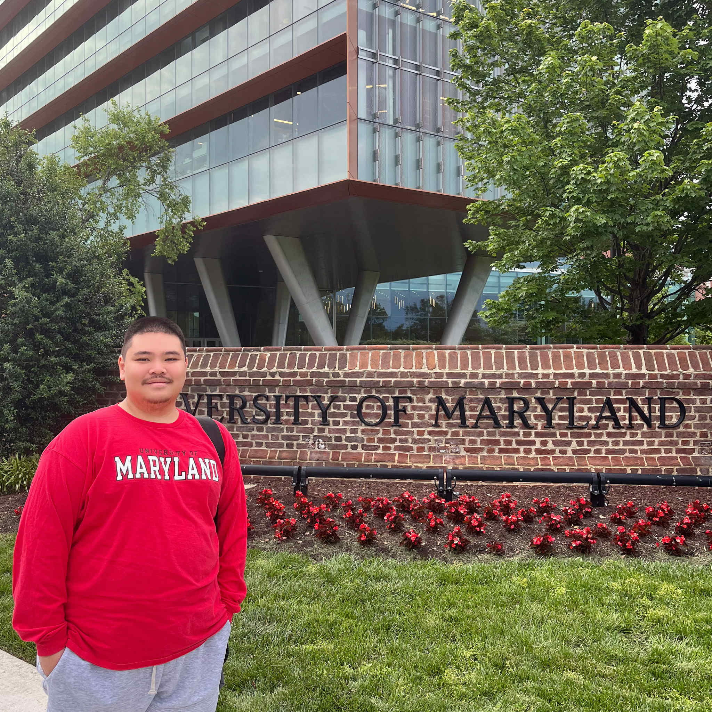

Molecule Jongwilai
Second-year Master Student

Experience
Job Titles: Data Storyteller, Project Manager
Job Organization: Punch Up World Co., Ltd, Bangkok, Thailand
Job Dates: Apr. 2022 - Aug. 2024
I investigate, gather, and analyze data related to social issues and turn them into written content in an understandable and compelling way. I also work closely with a data designer and software developer to visualize data into a comprehensible and interesting presentation.
Job Titles: Data Journalist, Content Creator
Job Organization: Thai Public Broadcasting Service (Thai PBS), Bangkok, Thailand
Jul. 2019 - Mar. 2022
I initiated data journalism projects, including investigating, gathering, and analyzing data. I write short news, articles, and documentaries regarding foreign affairs topics, and also produce and edit short and long-form video news content.
Job Titles: Freelance Writer
Job Organization: The Standard Pop, Bangkok, Thailand
Job Dates: Nov. 2018 - Mar 2020
I write articles regarding pop culture, music, film, art, and literature.
Education
- Master's in Journalism, University of Maryland-College Park, 2026
- Bachelor of Arts, Communication Arts, Chulalongkorn University, 2019
Skills
- Fluent Thai Communication
- Story Writing
- Data Analysis (Spreadsheet, R)
- Data Visualization (Flourish, Data Wrapper, Adobe Illustrator, C3.js)
- Photo/Video Editing (Adobe Photoshop, Premiere Pro, After Effects)
Contact me.